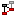
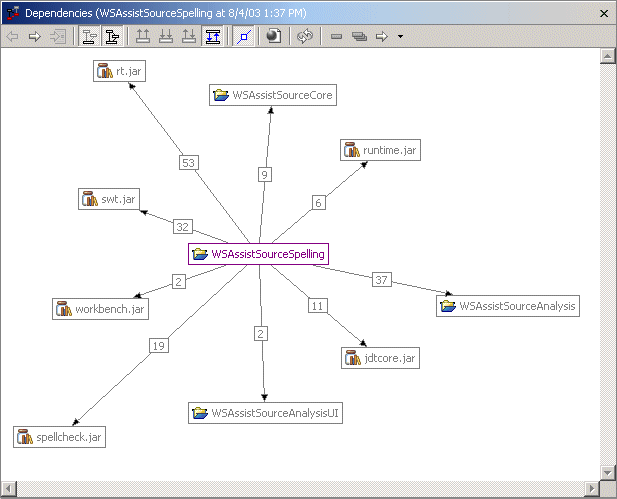
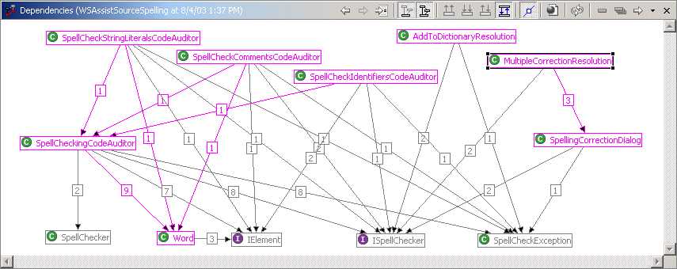

AbstractWhen decoupling two packages or projects, dependency analysis can save time by graphically showing couplings between classes so that time can be spent fixing the problem rather than finding the dependencies. In this one example we wanted to decouple the spelling engine from our user interface so that the engine could easily be swapped out and replaced with an entirely new engine. ContentWe started from the top down by right-clicking on our WSAssistSourceSpelling project and selecting  Analyze Dependencies from the CodePro Tools submenu on the context menu. This opened a view showing the dependencies of the WSAssistSourceSpelling project on all other projects and external *.jar files.  A quick glance at this graph shows 19 dependencies between WSAssistSourceSpelling and the spellcheck.jar, which we wanted to decouple. Double-clicking on the line between those two boxes displayed a second graph of the dependencies between classes in WSAssistSourceSpelling and classes in spellcheck.jar.  Reviewing this graph showed the coupling between the WSAssistSourceSpelling classes above such as SpellCheckStringLiteralsCodeAuditor and spellcheck.jar classes below such as IElement. By double clicking on various classes and reviewing the code, it quickly became apparent that we could
and thus decouple the UI from the engine. SummaryThe point of this discussion is that using the dependency analysis functionality saved us gobs of time. Rather than pouring over the code class by class to find the dependencies, we quickly identified the problem and fixed it. Having the right tools on hand can dramatically improve productivity. |